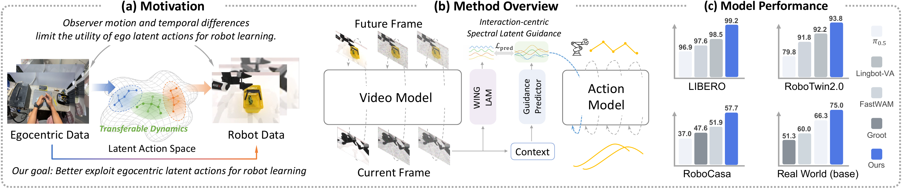

Focus on interaction
Decouple interaction-relevant signals from task-irrelevant motion in egocentric videos, and distill them into latent actions.
From human experience to robot intelligence.
HUMAN EXPERIENCE. ROBOT ACTION.

Learning what transfers across embodiments.
Decouple interaction-relevant signals from task-irrelevant motion in egocentric videos, and distill them into latent actions.
Identify slowly varying temporal structures shared by human interactions and robot behaviors in the spectral domain.
Use the shared spectral latent action to guide robot action generation at inference time.
Average success rates reported in the paper.
Four-suite average
+0.70 pp over the strongest shown baseline
Clean + randomized average
+0.20 pp over the strongest shown baseline
24-task tabletop average
+2.30 pp over the strongest shown baseline
Hover, focus, or tap a bar for details. All bars use the same 0–100% scale.
Click on any video below to expand it.
HOW IT WORKS
Learn interactions from human videos. Turn shared dynamics into robot actions.
Separate interaction from camera motion. WING-LAM uses geometric motion cues to separate camera movement from hand–object interactions, then distills the interaction signal into an RGB-only latent action model.
Keep the dynamics that transfer. A temporal discrete cosine transform (DCT) extracts low-frequency components of latent action sequences—the slowly varying structure shared by human and robot interactions.
Predict guidance, generate actions. At inference time, a lightweight predictor estimates this spectral latent action from the current image, instruction, and robot state. The action model attends to the predicted guidance to generate fine-grained robot controls.
The video backbone and guidance predictor are pretrained on human videos, then adapted with the action model on robot demonstrations. Future frames provide training targets; inference uses only the current context.
THE RESEARCH
Learning general-purpose robot policies requires large-scale real-world interaction data, yet collecting robot demonstrations through teleoperation remains expensive and difficult to scale. Egocentric videos provide a rich source of human interaction experience that shares task-relevant semantics with robotic manipulation, creating an opportunity to align human and robot actions in a shared latent action space for cross-embodiment knowledge transfer. However, existing latent action approaches typically infer actions through reconstruction between consecutive frames, which are not inherently interaction-centric and can be dominated by nuisance variations, such as ego-camera motion. Moreover, although human interactions and robot actions share interaction semantics, they often exhibit substantially different temporal dynamics, making direct transfer to robot policies challenging. To address these challenges, we propose WING (World Action Learning via INteraction-Centric Spectral Latent Guidance), a framework for transferring interaction knowledge from egocentric videos to robot policies. First, we introduce an interaction–motion decoupling mechanism that separates interaction-relevant signals from task-irrelevant motion and selectively distills the interaction-centric components into latent actions. Second, motivated by the observation that cross-embodiment task semantics are primarily encoded in slowly varying temporal structures, we identify shared components between egocentric latent actions and robot behaviors in the spectral domain and use them as guidance for action generation at inference time. With these designs, WING achieves average success rates of 99.20% on LIBERO, 93.80% on RoboTwin 2.0, and 57.7% on RoboCasa–GR1, while also demonstrating strong performance across four real-world tasks under diverse generalization settings. These results demonstrate that WING can effectively distill embodied interaction knowledge from large-scale egocentric videos and transfer it to robot control, providing a scalable pathway for acquiring physical interaction knowledge from human experience.
CITE THIS WORK
Manuscript citation. Publication details will be added when available.
@misc{liu_wing,
title = {{WING}: World Action Learning via {INteraction-Centric} Spectral Latent Guidance},
author = {Liu, Zhiming and Miao, Yikun and Chen, Ying and Yin, Hongrui and Zhu, Fangqi and Pang, Xiaoyi and Shou, Quanxin and Yan, Zhengyang and Wang, Haodong and Guo, Song},
note = {Manuscript}
}